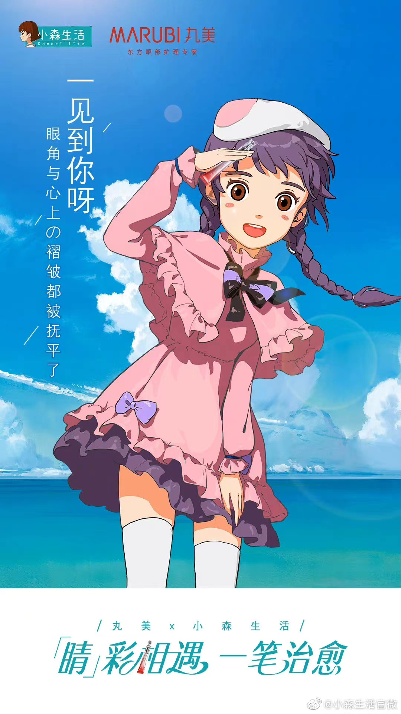
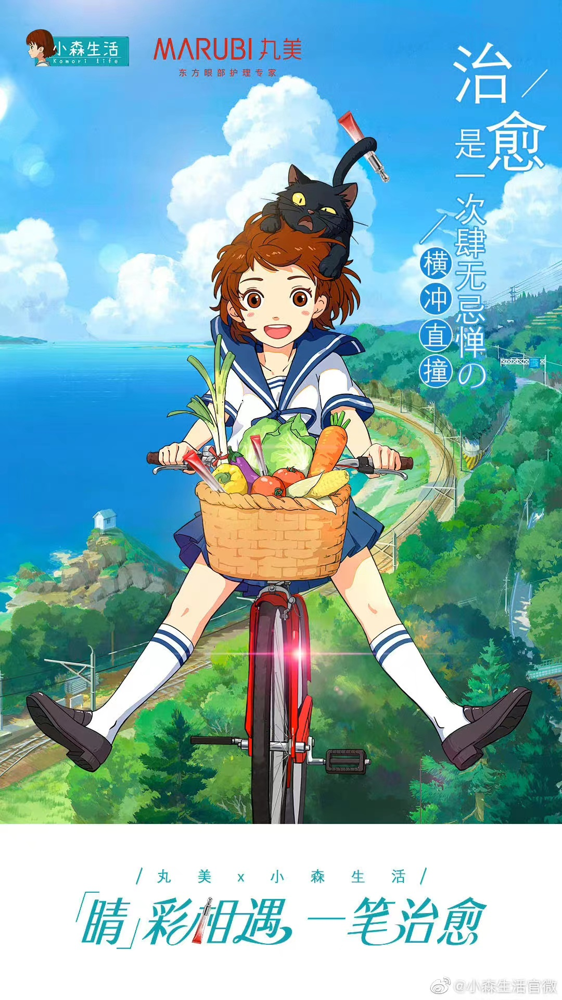

快来拥有属于你的小森世界吧。
远离城市的喧嚣，回归生活的初心，享受那一抹宁静的闲适。 厌倦大城市的生活的玩家，在收到一封来自奶奶的神秘信件后，回到了小时候生活过的家乡。在这里，耕种、收割、砍柴、做饭、吃饭⋯⋯接受大自然的馈赠，同时，亲手建起属于自己的家园，体验这田园生活和趣味横生的冒险与探索，更在与村里人的相处中，逐渐找回过去的记忆，治愈自己，温暖大家。还在等什么呢？
这个村子，终日风清云淡。
阳光下的蝉鸣绕着树，风里有青草的香气，云被拉扯得千丝万缕，树变得又高又远，在山风拂过的时候，叶子交错漏下的阳光映在树荫一隅的水洼上，晨间白露的霜还凝在叶面，蜻蜓就抖落了翅膀上的雾，漾起一圈圈的纹，石缝里挣扎生长的草，仰望着遮挡了天空的树。
